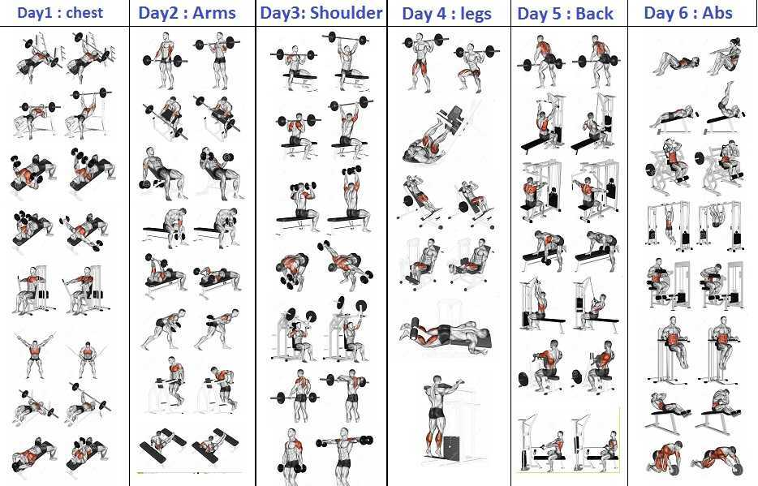
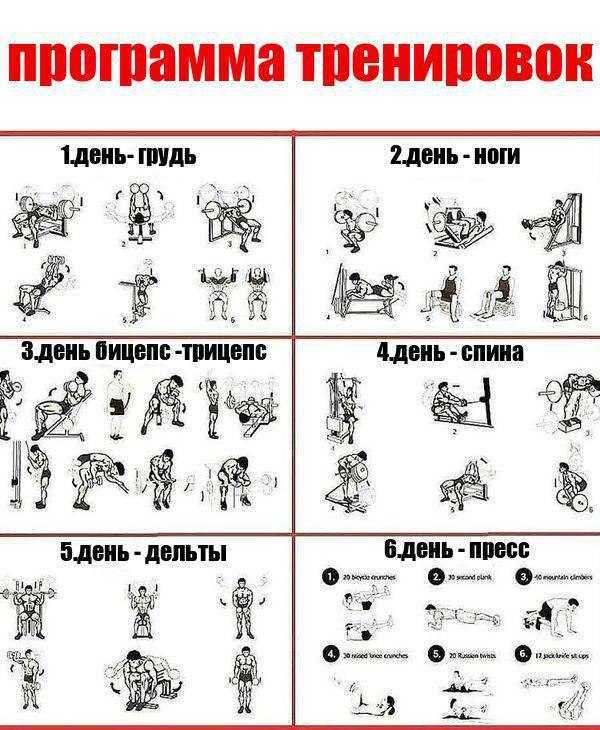

Тяни-толкай
"Тяни-толкай" (от англ. "push-pull") - это один из подходов к построению сплит-тренировок, при котором упражнения разделяются на "толкающие" (push) и "тянущие" (pull).

Суть "тяни-толкай" подхода заключается в том, что:
- Толкающие упражнения (push) - это те, при которых мышцы сокращаются, "толкая" вес от себя. Например:
- Жим штанги лежа
- Отжимания
- Жим штанги над головой
- Тянущие упражнения (pull) - это те, при которых мышцы сокращаются, "тянут" вес к себе. Например:
- Тяга штанги в наклоне
- Подтягивания
- Гребля на тренажере
Основные преимущества "тяни-толкай" подхода:
- Баланс мышечного развития: Разделение упражнений на "толкающие" и "тянущие" помогает поддерживать баланс между "толкающими" (грудь, плечи, трицепсы) и "тянущими" (спина, бицепсы) мышечными группами.
- Эффективность восстановления: Мышцы, участвующие в "толкающих" и "тянущих" упражнениях, отдыхают в разные дни, что способствует лучшему восстановлению.
- Разнообразие тренировок: Чередование "толкающих" и "тянущих" упражнений добавляет больше разнообразия в тренировочный процесс.
- Целевая проработка мышц: Данный подход позволяет более точечно прорабатывать отдельные мышечные группы.
Пример программы тренировок.

- Понедельник.
- Жим штанги лёжа: 5 по 5.
- Жим гантель под углом: 4 по 8-12.
- Отжимания на брусьях: 4 по 8-10.
- Сведение гантелей лёжа: 3 по 10-15.
- Французский жим со штангой: 4 по 8-10.
- Вторник. Отдых.
- Среда.
- Приседания со штангой: 5 по 6-10.
- Сгибания ног в тренажёре лёжа: 4 по 8-12.
- Разгибания ног в тренажёре сидя: 3 по 8-12.
- Подъёмы на голень: 4 по 15-25.
- Четверг.
- Жим гантелей сидя: 5 по 6-12 (с применением обратной пирамиды).
- Протяжка со штангой: 4 по12-15.
- Отведения в кроссовере на заднюю дельту: 4 по 10-15.
- Махи с гантелями стоя - 1 дроп - сет (10,10,10).
- Пятница. Отдых.
- Суббота.
- Подтягивания широким хватом: 50 повторов независимо от количества подходов.
- Тяга "Т"- грифа: 4 по 8-10.
- Становая тяга классическая: 5 по 5.
- Тяга верхнего блока широким параллельным хватом: 3 по 12-15.
- Подъём штанги на бицепс: 4 по 8-12.
- "Молоты": 3 по 10-15.
- Воскресенье. Отдых.
Такой подход к построению тренировок широко используется в бодибилдинге и силовых видах спорта для достижения гармоничного развития мышц.